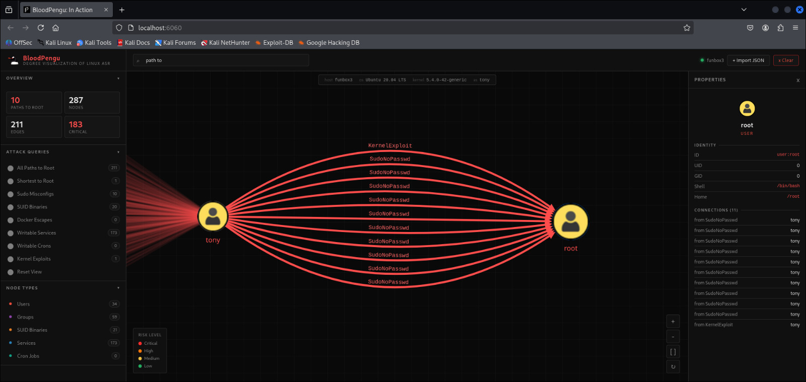
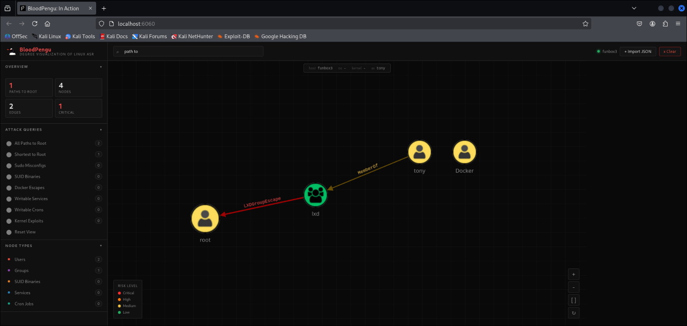
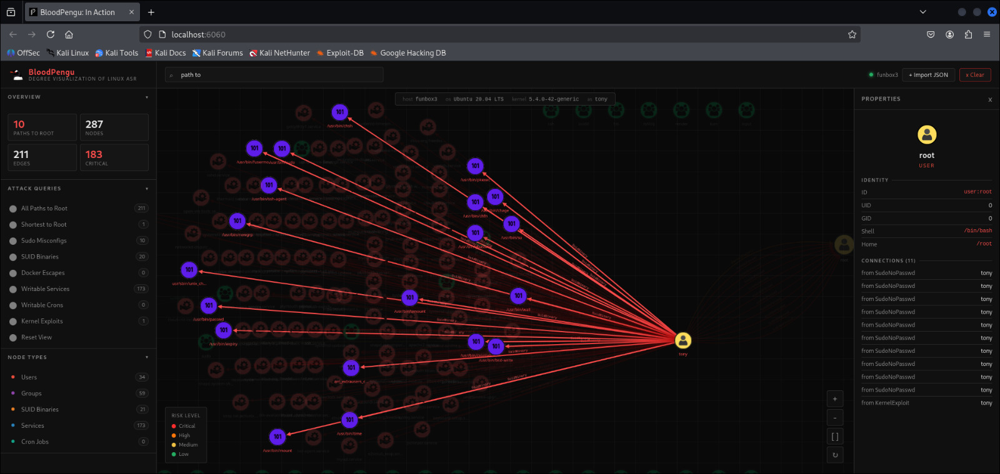
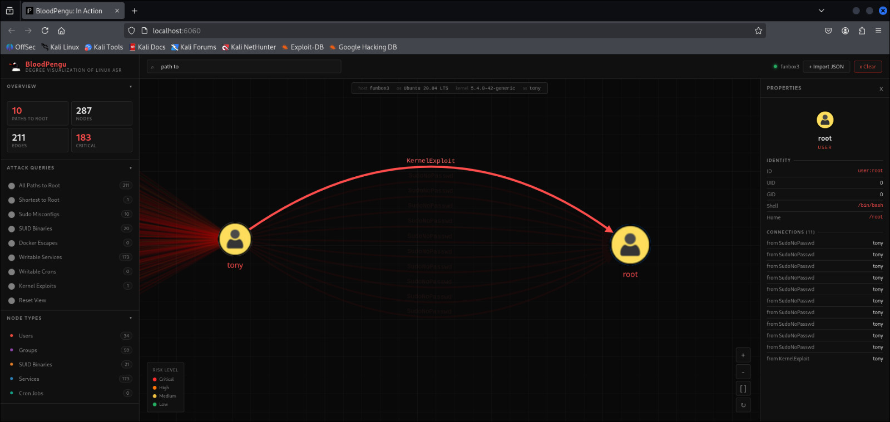

Screenshots
BloodPengu in action.
Real attack paths. Real Linux environments. Every node clickable. Every edge labeled.

Attack Path Overview
Full graph view showing all privilege escalation paths from low-privilege user to root. Edges colored by risk severity across the entire attack surface.

LXD Group Escape
Vuln-User is a member of the lxd group. BloodPengu maps the LXDGroupEscape edge directly to root, exposing the single-hop privilege escalation chain.

Dense Attack Surface
Hundreds nodes, hundreds edges, hundreds of critical paths rendered in one graph. SUID binaries fanning out from a single user, each one a direct path to root privilege.
SudoNoPasswd Path
Shortest path query result from Vuln-User to root via SudoNoPasswd. The curved edge shows a single-step escalation requiring no password. Remediation is immediate.

Kernel Exploit Path
KernelExploit edge from Vuln-User to root. PyPengu detected a vulnerable kernel version and BloodPengu surfaces the CVE-based escalation as a critical attack path.

Multi-Edge Connections
All paths from Vuln-User to root rendered simultaneously. KernelExploit and ten SudoNoPasswd edges shown as a fan between two nodes with risk labels on each arc.